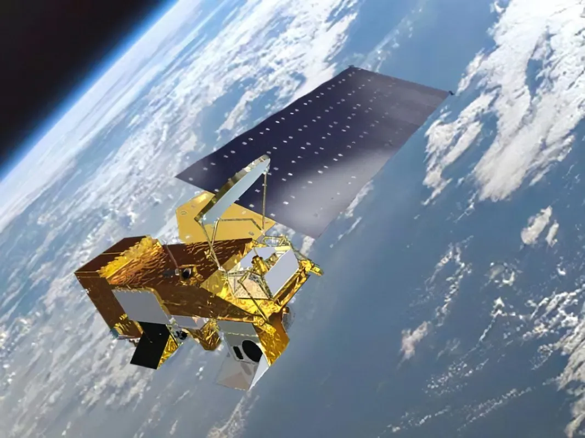

Foto: NASA. Legenda: Satélite da NASA orbitando a Terra.
A NASA opera uma variedade de satélites com diferentes propósitos, desde a observação da Terra até a exploração de outros planetas. Aqui estão alguns dos principais satélites e suas funções:
- Satélites de Observação da Terra:
1. Aqua

Foto: NASA.
Objetivo: Estuda o ciclo da água na Terra, incluindo evaporação, precipitação e circulação oceânica.
Importância: Ajuda a entender as mudanças climáticas e a prever eventos meteorológicos extremos.
2. Aura
Foto: NASA.
Objetivo: Monitora a composição da atmosfera, focando em gases como o ozônio e o dióxido de nitrogênio.
Importância: Fornece dados cruciais sobre a qualidade do ar e os efeitos das emissões humanas.
3. GRACE-FO (Gravity Recovery and Climate Experiment Follow-On)
Foto: NASA.
Objetivo: Detecta variações no campo gravitacional da Terra para monitorar mudanças na massa de água.
Importância: Observa o derretimento de geleiras e alterações no nível do mar.
- Satélites de Observação Solar:
IRIS (Interface Region Imaging Spectrograph)
Foto: NASA.
Objetivo: Analisa a interface entre a superfície solar e a corona.
Importância: Investiga como a energia se move e aquece as camadas superiores do Sol.
- Satélites de Exploração Planetária:
Cassini-Huygens
Foto: NASA.
Objetivo: Estudou Saturno e suas luas, especialmente Titã.
Importância: Revelou detalhes sobre a atmosfera e a superfície de Titã, além de informações sobre os anéis de Saturno.
- Satélites de Comunicação:
TDRS (Tracking and Data Relay Satellite System)
Foto: NASA.
Objetivo: Fornece comunicação contínua entre satélites em órbita baixa e centros de controle na Terra.
Importância: Garante a transmissão de dados de missões como a Estação Espacial Internacional e o Telescópio Espacial Hubble.
- Telescópios Espaciais:
1. Hubble Space Telescope
Foto: NASA.
Objetivo: Observa o universo em luz visível e ultravioleta.
Importância: Responsável por imagens icônicas e descobertas sobre a expansão do universo.
2. James Webb Space Telescope
Foto: NASA.
Objetivo: Estuda o universo em infravermelho, permitindo observar galáxias distantes e a formação de estrelas.
Importância: Considerado o sucessor do Hubble, oferece uma visão mais profunda do cosmos.
- Recursos Interativos:
NASA Worldview: Plataforma que permite visualizar imagens de satélite em tempo real, útil para monitorar eventos como incêndios florestais e tempestades.
Como pudemos observar na matéria acima, vemos que a NASA não faz somente pesquisas sobre o espaço ou foguetes, mas também coisas que nos ajudam durante o dia-a-dia; de satélites até alimentos desidratados, tudo isso somente para ajudar-nos.
Para entender um pouco mais sobre o conteúdo, assista o nosso vídeo abaixo:
Tecnologias da NASA que são usadas no nosso dia a dia
GPS, fones de ouvido, espuma de memória etc
Você sabia que muitas das tecnologias que usamos atualmente surgiram graças às inovações desenvolvidas pela NASA? A agência espacial norte-americana, além de explorar o universo, também transformou a vida aqui na Terra com invenções que hoje são comuns em nossas casas e bolsos.
Um exemplo curioso são os fones de ouvido sem fio. Essa tecnologia começou a ser desenvolvida para que os astronautas pudessem se comunicar com liberdade dentro das espaçonaves, sem depender de cabos, algo essencial durante as missões espaciais.
Outro avanço que veio do espaço direto para nossos bolsos são as câmeras dos smartphones. A NASA teve um papel fundamental na criação dos sensores de imagem CMOS — tecnologia pensada inicialmente para capturar imagens em equipamentos miniaturizados em missões espaciais. Hoje, esses sensores estão em praticamente todos os celulares modernos.
Até mesmo o seu sono pode ter um toque espacial. A famosa espuma de memória, usada em colchões e travesseiros, foi inventada pela NASA para tornar os assentos das naves mais confortáveis. Ela se adapta ao formato do corpo com o calor e a pressão, garantindo mais conforto e sustentação — e depois volta ao seu estado original.
Esses são apenas alguns exemplos de como a exploração espacial impulsiona inovações que melhoram o nosso cotidiano aqui na Terra.
Veja mais:
Materiais resistentes a arranhões:
A NASA desenvolveu materiais transparentes com revestimentos duros de diamante para sistemas aeroespaciais, o que levou ao desenvolvimento de lentes resistentes a arranhões.
GPS:
A precisão do sistema de navegação por satélite (GPS) foi aprimorada pela NASA para garantir que os astronautas pudessem navegar com segurança no espaço.
Aspirador portátil:
Uma parceria entre a NASA e a Black & Decker resultou na criação de um aspirador de pó portátil com design ergonômico e sem fio, com baterias recarregáveis.